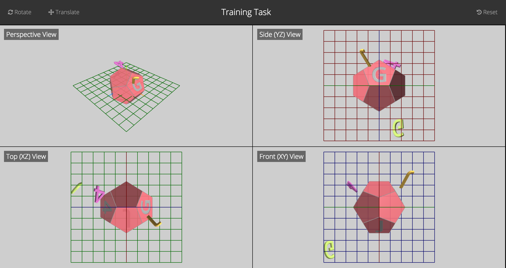

Multi-View Interface
This interface shows your scene from 4 separate views. Each quadrant represents a different angle from which you can see and control your objects. In the side, top and front views you can manipulate each object on the 2 axes labeled. In the perspective view you can manipulate the object on any axis desired.

Object Controls:
- Translate: Click the "Translate" icon on the top left of the interface. Now you will be able to move objects. To select an object to move, hover over it and press the left mouse button. To move this object, hold down the left mouse button and drag the mouse to where you want the object positioned.
- Rotate: Click the "Rotate" icon on the top left of the interface. Now you will be able to rotate objects. To select an object to rotate, hover over it and press the left mouse button. To rotate this object, hold down the left mouse button and drag the mouse to where you want the object to rotate to.
- Resetting objects to initial position: On the "reset" dropdown on the toolbar click "Object Position"
Scene Controls:
- Zoom: use the mouse-wheel to zoom in/out in your interface.
- Rotating the scene: If you left-click-and-drag on the scene and have not selected "rotate" or "translate, you will rotate the scene in the direction that you move the mouse. Note that scene rotation is only enabled in the perspective view
- Panning the scene: If you right-click-and-drag on the scene and have not selected "rotate" or "translate, you will pan the scene in the direction that you move the mouse.
- Resetting the scene orientation: On the "reset" dropdown on the toolbar click "Scene Orientation"